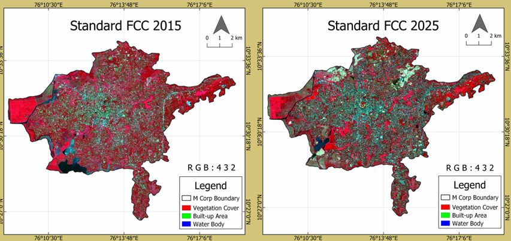

Explore my work

Thrissur Flood Vulnerability Assessment
Identifying the most vulnerable zones in the city using GEE and QGIS.

Thrissur Supervised Land Use Classification
Mapping land use changes in Thrissur from 2019 to 2025 using GEE.

Thiruvananthapuram Municipal Budget Analysis
Identifying revenue sources, expenditure priorities, and data gaps in the municipal budget.

Thrissur Land Cover Change Mapping
Assessing changes in vegetation, built-up, and water cover from 2015 to 2025 using QGIS.

Mapping Spatial Features in Thrissur
Visualising points, lines, and polygons using QGIS.

Thrissur City Profile and Analytics
Visualising demographic profile, literacy, and workforce participation using R.